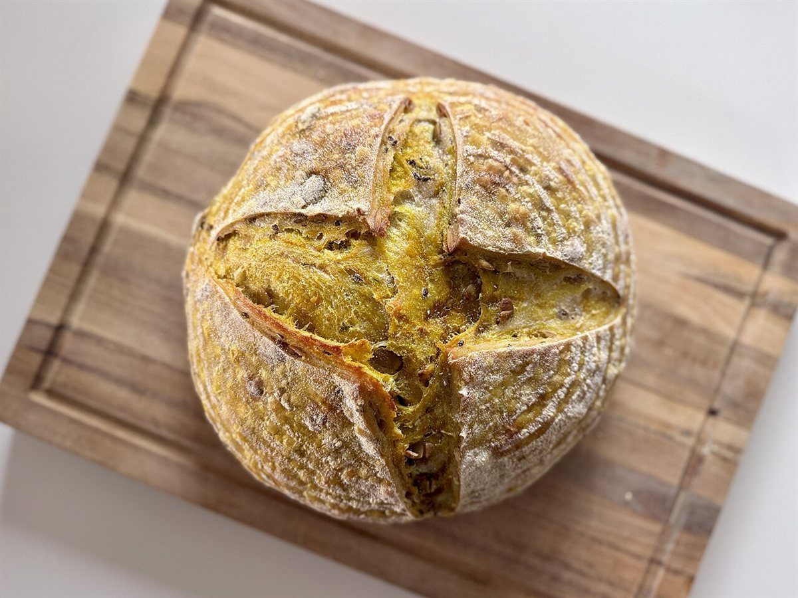
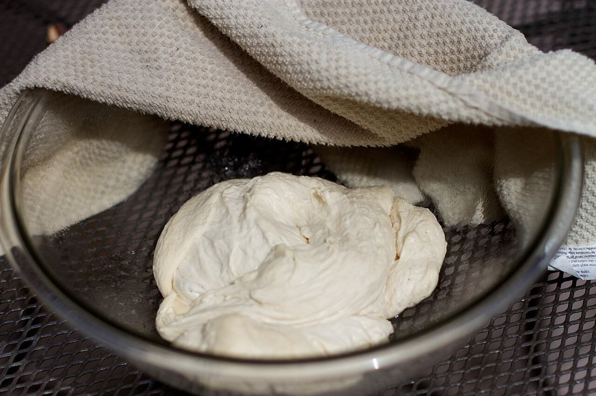

麦畑
黄金色の穂が揺れる風景のイメージ。

制作側の連想
店名の由来は分かりません。制作側は「パンの国」という言葉から、国境を越える旅と、パスポートに押される入国スタンプを連想しました。そこでこのサイトは、各ページをパスポートの1ページに見立て、スタンプを押すように進む作りにしています。お店の理念や由来とは無関係の、制作側の連想です。
スタンプ帖(イメージ)
写真は国外・撮影地不明のフリー素材で、お店や商品ではありません。パンにまつわる風景のイメージです。
黄金色の穂が揺れる風景のイメージ。

布の下でふくらむ生地のイメージ。

橙色の火が灯る窯のイメージ。

かごに並ぶパンのイメージ。
入国カード
| 所在地 | 〒958-0849 新潟県村上市寺町１−６ |
|---|---|
| 電話 | 0254-62-7593 |
| 営業時間 | 準備中 |
| 定休日 | 準備中 |
| メニュー・価格 | 準備中 |
| ご予約 | 準備中 |
| 駐車場 | 準備中 |
| SNS | Instagram @mani.0626 |